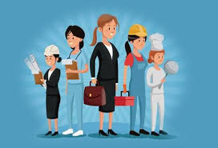

التحولات الديموغرافية في المغرب
شهد المغرب خلال العقود الأخيرة تغيرات ديموغرافية كبيرة، حيث انخفض معدل الخصوبة وارتفع متوسط العمر المتوقع. هذه التحولات أدت إلى تزايد نسبة الشباب من جهة وتنامي نسبة المسنين من جهة أخرى، مما يفرض تحديات جديدة على السياسات العمومية.
ومن أبرز هذه التحديات، قضايا الصحة والتعليم والتشغيل، إلى جانب ضرورة تعزيز الحماية الاجتماعية وتوسيع التغطية الصحية.
الفوارق الاجتماعية بين الوسط الحضري والقروي
ما زالت الفوارق الاجتماعية بين المدن والقرى واضحة، خاصة فيما يتعلق بالبنية التحتية والخدمات الصحية والتعليمية. ورغم البرامج الحكومية لتقليص هذه الفوارق، فإن العديد من المناطق القروية تعاني من نقص في التجهيزات الأساسية مثل الطرق والماء والكهرباء.
لذلك يبقى الاستثمار في العالم القروي من الأولويات لتحقيق تنمية شاملة ومستدامة تضمن العدالة الاجتماعية.
دور المرأة في التنمية الاجتماعية
حققت المرأة المغربية تقدماً ملحوظاً في مختلف المجالات، من التعليم والعمل وصولاً إلى المشاركة السياسية. هذا الحضور المتزايد ساهم في دعم التنمية الاجتماعية والاقتصادية للبلاد.
ومع ذلك، ما زالت بعض التحديات قائمة مثل الفوارق في الأجور وصعوبات الولوج إلى مراكز القرار، مما يستدعي مواصلة الإصلاحات لتعزيز المساواة بين الجنسين.